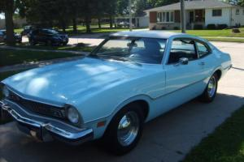
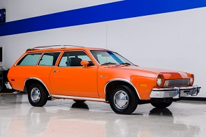

{% extends 'base.html' %}
{% block content %}
Your Details:
- Email: {{ current_user.email }}
- Token: {{ current_user.token }}
Some vehicle details.
 Owned from 1985 to 2008. Actual color, "cream". Survived many collisions
including being rear-ended by an 18-wheel truck and trailer.
Owned from 1985 to 2008. Actual color, "cream". Survived many collisions
including being rear-ended by an 18-wheel truck and trailer.
- 
Owned from 1985 to 1986. Commuter for school. Scared my mother enough that she got me the
El Camino for a Christmas gift along with a $2500 loan.
- 
Owned from 1986 to 1987. Abandoned by my best friend in front of my house. I gave him $50 and
replaced the radiator as I had no vehicle after the El Camino had encountered an altercation.
After the transmission failed, it was taken to the crusher and given it's proper burial.
-
Owned from 2017 to present. Driven 30000 miles in the first 6 months, then machanics started to fail.
Repairs far in excess of the vehicle's worth. Now is a giant paper weight absorbing insurance and
registration costs, but only $7000 left on the financing!
-
Vehicles owned but not shown include: 1989 Plymouth Hoizon, 1999 Chevrolet S-10 pickup,
2001 Mercedes ML320, 2004 Saturn Vue, and 2007 Mazda 5
{% endblock content %}